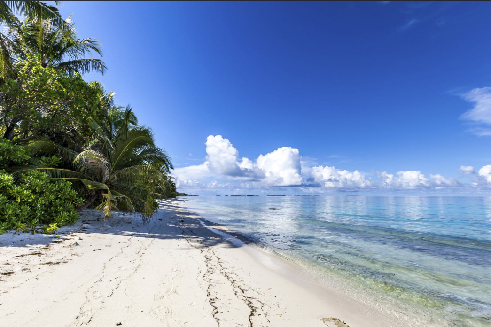

Explore Nature Destinations
Nature destinations offer a refreshing escape from the hustle of modern life, immersing visitors in landscapes shaped purely by earth, water, and sky. From the serene solitude of pine-forested mountains and sweeping desert dunes to the vibrant biodiversity of tropical rainforests and coastal sea cliffs, these environments invite us to slow down and reconnect with the physical world. Exploring nature is not merely about sight-seeing; it is a sensory experience—the smell of crisp mountain air, the sound of crashing waves or rustling leaves, and the vast open horizons that bring a sense of mental clarity and tranquility. Whether through high-altitude trekking, kayaking quiet riverways, or simply watching a sunrise over a protected national park, spending time in pristine natural settings reduces stress, fosters environmental stewardship, and reminds us of our deep connection to the natural world.
Mountain Destinations

Mountain destinations hold a unique allure, offering a blend of grand landscapes, crisp high-altitude air, and peaceful solitude. Marked by towering snow-capped peaks, deep valleys, and pine-scented forests, alpine regions draw both thrill-seekers and those looking to unplug.
Waterfalls & Lakes

Waterfalls and lakes are two of Earth's most striking inland surface water formations. While both represent critical components of global hydrological, ecological, and geographical systems, they differ fundamentally in structure, water dynamics, and formation processes.
Forest Destinations

Forest destinations encompass a wide variety of ecological biomes across the globe, each offering distinct climate profiles, biodiversity, and recreational opportunities.
Beaches & Coastal Nature

Beaches and coastal nature represent dynamic ecosystems formed where land meets oceans, seas, or large lakes. These environments are shaped by continuous marine energy, tidal shifts, and atmospheric forces.
Destination Highlights
- Mountain views
- Waterfalls
- Forest walks
- Peaceful lakes
- Coastal scenery
Explore, Experience & Protect
Exploring nature's breathtaking destinations offers a powerful way to reconnect with the world while finding inner peace. To preserve these beautiful landscapes for future generations, it is essential to travel responsibly by leaving no trace, respecting local wildlife, and protecting fragile ecosystems. By treading lightly, we ensure that the natural wonders we admire today remain vibrant and unharmed for tomorrow.